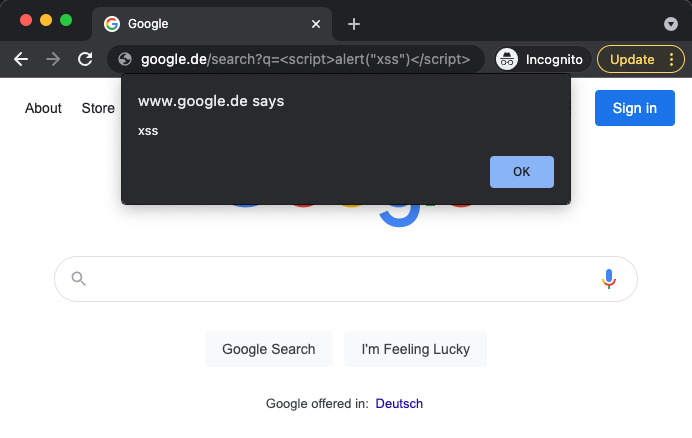
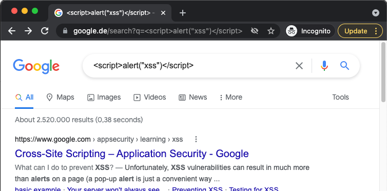

Angriffsmethoden
- Request-Manipulation
- Directory Traversal
- SQL-Injection
- Session Hijacking
- Cross-Site-Scripting
- Cross-Site-Request-Forgery
- Man-In-The-Browser
- Phishing
- Denail-Of-Service
Request-Manipulation
Wer hat davon mitbekommen?

Request-Manipulation
- "www.some-domain.de/users/41"
- gibt es vielleicht auch einen user 42?
- alle öffentlichen Schnittstellen können aufgerufen werden
Request-Manipulation - Lösung
- Datenzugriff nur für berechtigte und authentifizierte Nutzer
- evtl. zusätzlich keine monoton aufsteigende Id's
Directory Traversal
- ähnlich wie Request-Manipulation
- "http://www.example.com/index.foo?item=datei1.html"
- "http://www.example.com/index.foo?item=../../../Config.sys"
Directory Traversal - Lösung
- keine sensitiven Daten an öffentlichen Orten ablegen
- Zugriffsrechte auf Ordner absichern
- Pfade als Eingabe müssen überprüft werden
SQL-Injection
var username = "foo@mail.com'; --"
var password = "lala"
var sql = "SELECT * FROM user " +
"WHERE username='" + username + "' " +
"AND password= '" + password "';";
SELECT * FROM user
WHERE username='foo@mail.com';
--' AND password='lala';
SQL-Injection - Varianten
var username = "lala'; DROP TABLE user;--"
var password = "lala"
var username = "lala'; UPDATE password='password' " +
"WHERE username='foo@mail.com';--"
var password = "lala"
SQL-Injection - Vorgehen
- ausprobieren der gängigsten Namen für
- Datenbanken
- Tabellen
- Spalten
- Fehlermeldungen liefern wichtige Informationen
SQL-Injection - Lösung
- Silver Bullet: Prepared Statements
var sql = "SELECT * FROM user " +
"WHERE username=:username" +
"AND password=:password";
em.createNativeQuery(sql)
.setParameter("username", username)
.setParameter("password", password)
.getSingleResult();
Session Hijacking
- Klauen der Session eines Nutzers
- Raten der Session ID
- Ausspähen der Session ID
- Aussperren des Nutzers durch Passwortänderung
Session Hijacking - Lösung
- Binden der Session ID an die IP-Adresse oder Browser
- größere Session ID wählen
- Passwort ändern verhindern
- altes Passwort erneut eingeben
Cross-Site-Scripting

Cross-Site-Scripting
- Einfügen von JavaScript Code in Webseiten
- Ausführung des Codes durch den Browser
- Möglicher Schaden
- Verwirrung des Nutzers
- Weiterleitung auf andere Webseiten
- Auslesen und Wegschicken von Daten
Cross-Site-Scripting - Lösung
- Encoding von Inhalten, die angezeigt werden
- Angular bringt das von Haus aus mit

Cross-Site-Scripting - Lösung
- Content Security Policy
- schränkt das Abrufen von Scripts ein
- schränkt den JavaScript Code ein, der ausgeführt wird
Cross-Site-Request-Forgery
- Mischung aus XSS und Session Hijacking
- Ausnutzung der Session durch XSS
- Script löst im Hintergrund Transaktionen aus
Cross-Site-Request-Forgery - Lösung
- siehe XSS
- Webanwendung und Server teilen ein Secret
- Secret wird bei jedem Request mitgeschickt
- Secret kann im Cookie oder im Header liegen
Man-In-The-Middle (Man-In-The-Browser)
- Angreifer schaltet sich zwischen Nutzer und Betreiber
- zum Beispiel durch einen Fake Webauftritt
- bei Man-In-The-Browser wird kein Fake Webauftritt gebraucht
- der Angreifer manipuliert hier direkt den Browser
Man-In-The-Middle - Lösung
- HTTPS verwenden (ordentliche Verschlüsselung)
- zwei Faktor Authentifizierung (2FA)
Phishing
- Erlangen von persönlichen Daten durchs Vertrauenserschleichung
- Angreifer gibt sich z.B. als Webseiten Betreiber aus
- basiert auf Social Engineering
Phishing - Lösung
- 2FA hilft gegen Identitätsdiebstahl
- Nutzer müssen leider mitdenken
Denail-Of-Service
- Überlastung eines Systems durch viele Anfragen
- im speziellen Fall auch Distributed-Denail-of-Service
- hierbei werden Anfragen von vielen Rechnern gestellt
- oft durch Botnetze
Denail-Of-Service - Lösung
- wird im Idealfall vom Server Provider verhinder
- Muster der Angriffe erkennen und auf diese nicht reagieren